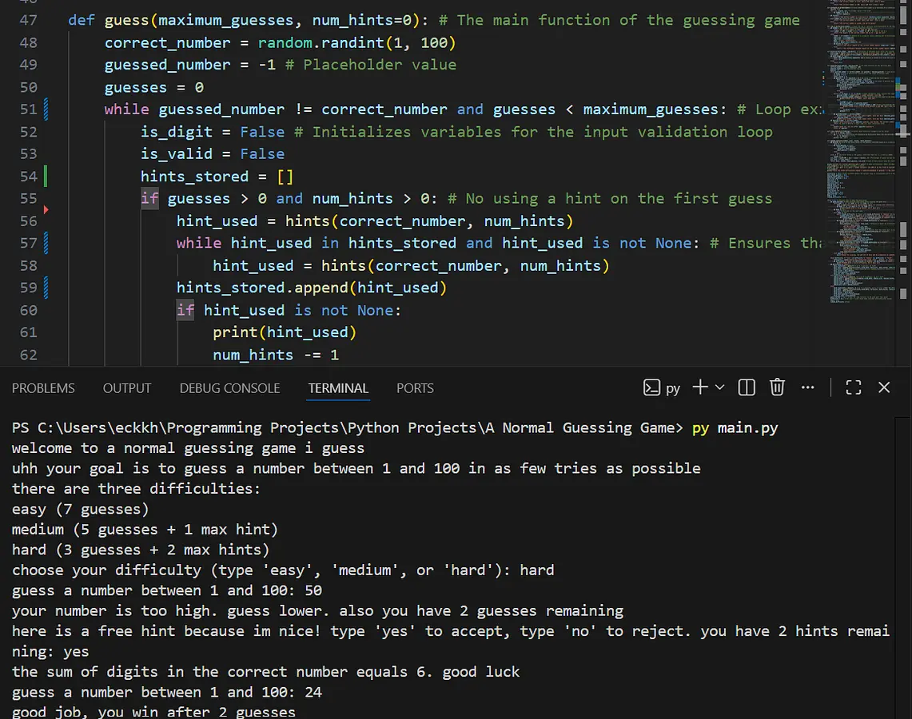
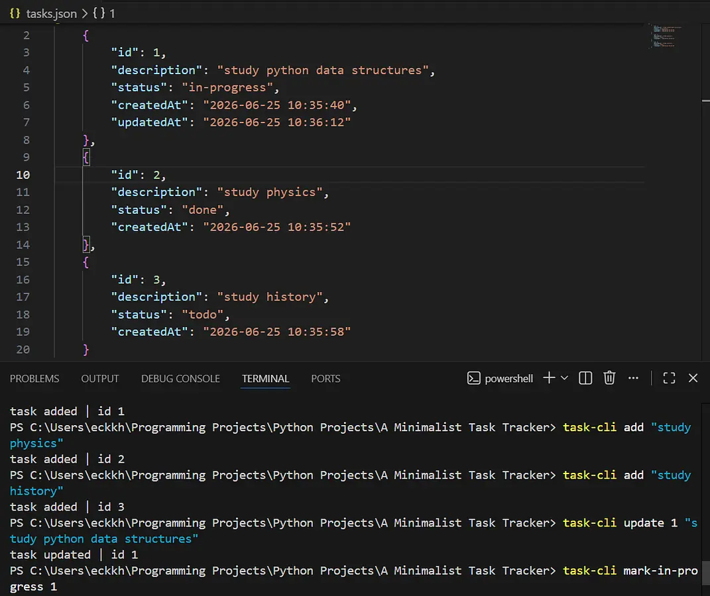

Projects
A comprehensive list of ALL my projects here!
Software
The art of coding digital programs to solve real-world problems.
A Normal Guessing Game
Guess a number between 1 and 100, with three difficulties, custom hints, and user statistics!
Tags: Software, Python

A Minimalist Task Tracker
A command-line tool for storing tasks in a JSON file. Comes with 6 default commands.
Tags: Software, Python, CLI, JSON

A Basic Expense Tracker
A command-line tool for storing expenses in a CSV file. Also features a monthly budgeting system.
Tags: Software, Python, CLI, CSV
Hardware
The art of building physical programs to solve real-world problems.
LED Options Mixer
A circuit schematic for mixing different properties of LEDs. Utilizes three potentiometers (one for each property) and five unique LEDs.
Tags: Hardware, C++